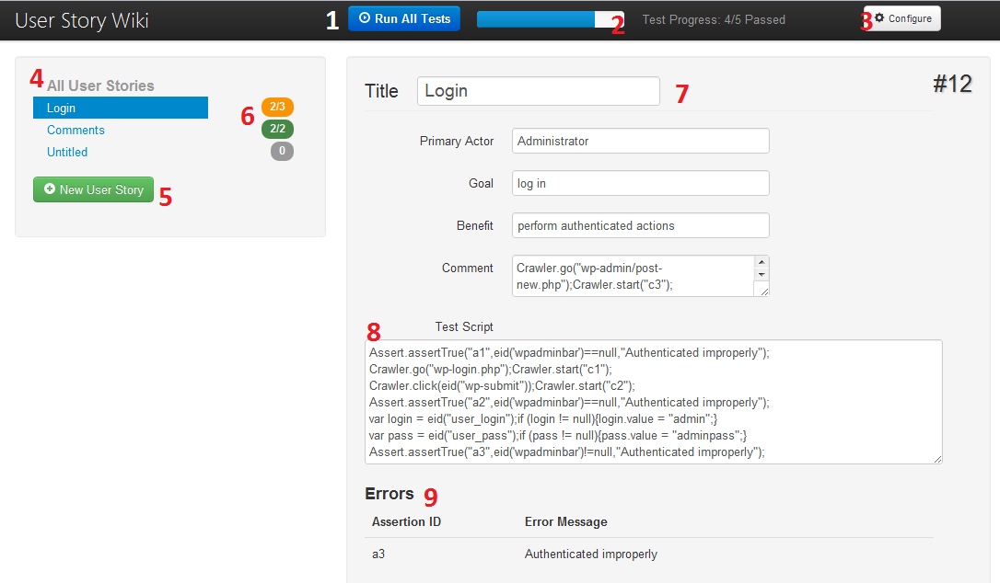
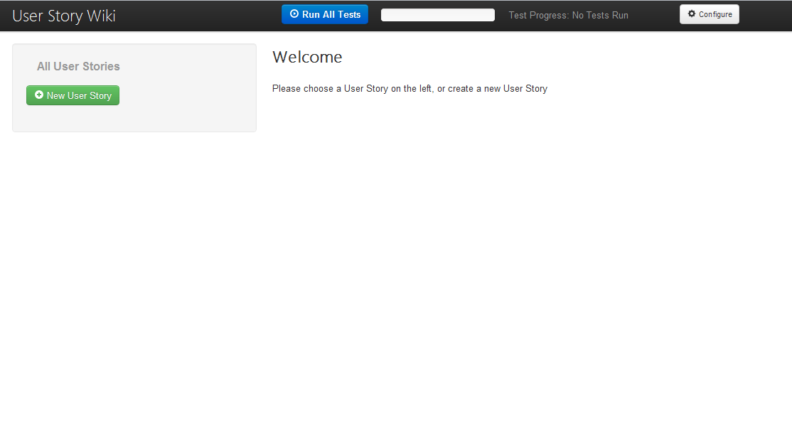
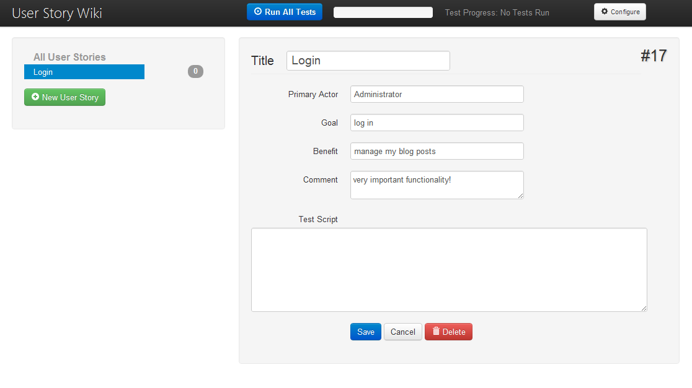
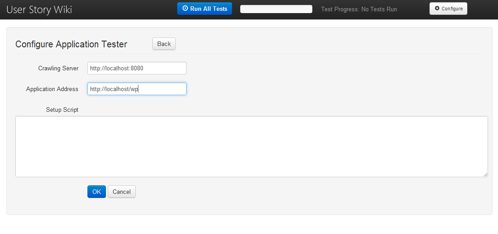
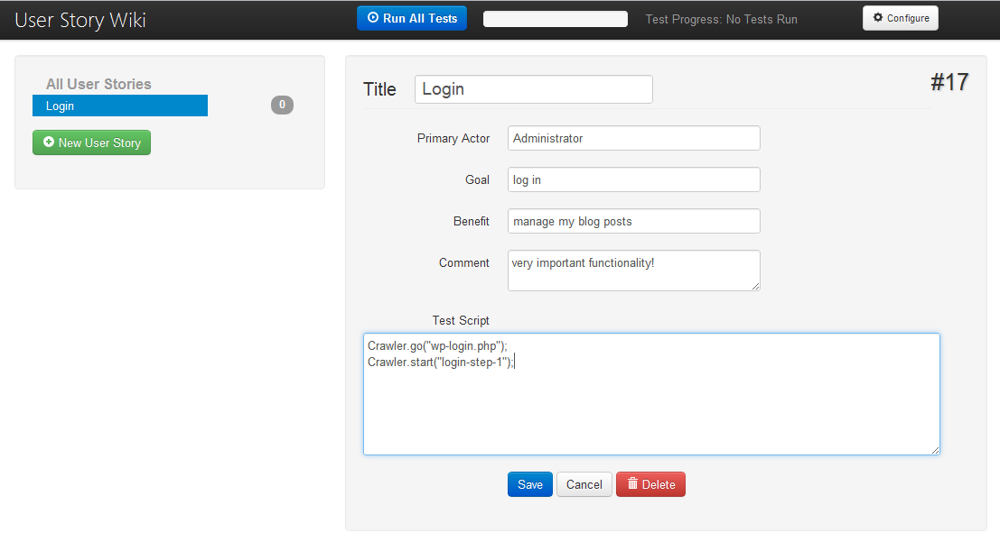
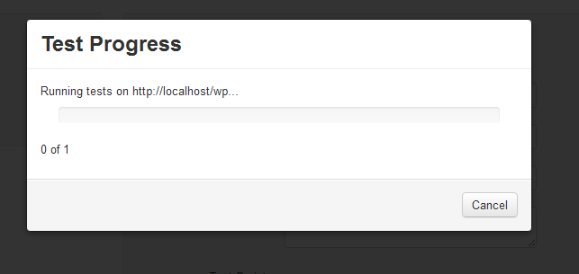
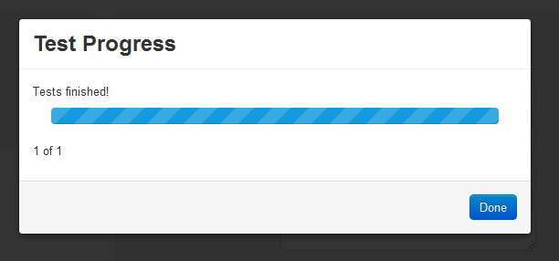
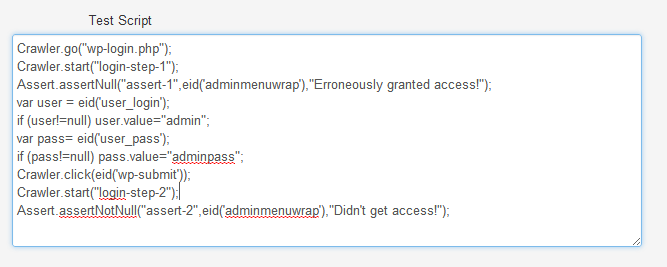
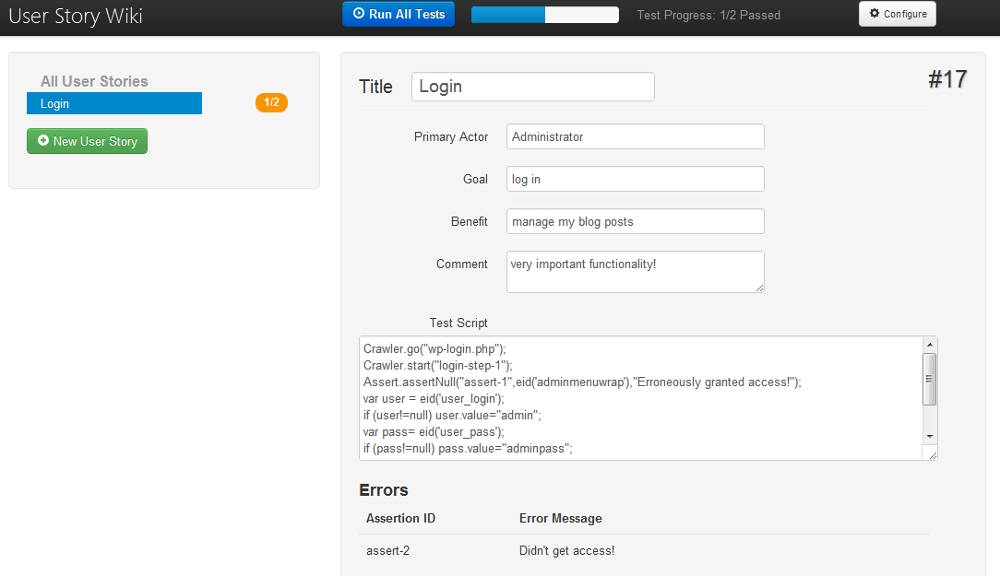
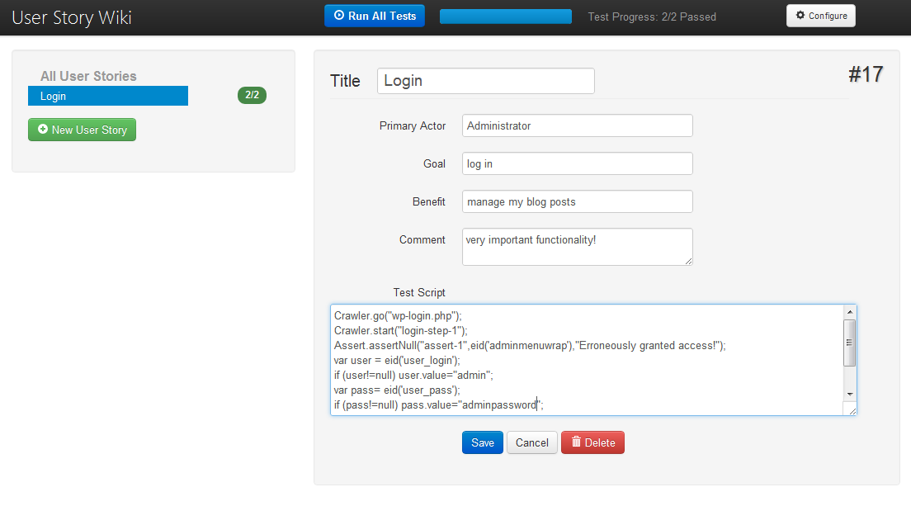

Feature Testing with Crawljax and JavaScript
User Guide
This file will walk you through installing and using the project. If you're looking for information about the Practical Applications and Future Work, or for the Developer Guide, this is probably not page you want!
The project has 3 components: the Testing Server, the Sample User Story Wiki, and the Sample Tested Application. The Testing Server can be interacted with via a RESTful API, documented in the Developer Guide, and is responsible for running the test scripts on your pages. The Sample User Story Wiki is a simple application written in PHP designed to illustrate the integration of user stories with testing tools: you create user stories for your application, add test scripts, and run the tests on your application. The Sample Tested Application is just a WordPress Blog, and you would ideally use your own untested web application in place of this.
Required Software
There are a number of pieces of software you need to run the project. If you only wish to run the Testing Server and post test scripts to it via other software, then a servlet container should be the only required software. Currently, this software exists as a Proof-of-Concept. This means that, while it should theoretically work with many configurations of the required software packages, it has only been tested with one or two of them. For my development, I used:
Testing Server
- Apache Tomcat v. 7.02(Servlet container)
- Mozilla Firefox v. 3.6 - this is the only version I tested that works with the current version of CrawlJax
Sample User Story Wiki
Sample Tested Application (WordPress Blog)
Please install the required software components for the module you intend on using, and proceed to the next step
Installing from Git
Before you do anything else, check out the source from the GitHub repository using the git clone command.
Testing Server
Copy the CrawlJaxServer.war file into your servlet container's webapps directory (may be something else under a different servlet container). Make sure your server is started; the application should start automatically and respond to calls through the API.
To build from source, import the CrawlJaxServer project into Eclipse for JavaEE. You'll need to set up a server to deploy the project to (via File, New, Other: Server), and then set the project's server to the one you just created.
Sample User Story Wiki
To install the User Story Wiki, simply copy the folder to your htdocs directory where you installed XAMPP. Ensure Apache and MySQL are running. Create a new MySQL database called "wiki" and make sure at least one user has access to it. Update the file "db.php" with your database name/username/password.
Sample Tested Application
To test the same application I used when developing, just grab the latest version of WordPress. In practice though, you should write your own application and then point the User Story Wiki/Testing Server at localhost/application (for example) for testing.
Sample User Story Wiki
We'll walk through the elements of the User Story Wiki (screenshot below)
- Run Tests Button
Press this to run all of your tests on the currently configured Crawljax Test Server (see 3) - Overall Test Progress Bar
Shows the current number of passing assertions over the total number of assertions made. - Configure Button
Allows you to specify the location of the Crawljax server, the location of your application to test, and a script to run before each test script. - User Stories List
Shows a list of the application's specified User Stories, and the currently selected User Story. - New User Story
Adds a new User Story to the list and selects it for editing. - Individual Test Progress Badges
Shows test completion progress on each User Story. A 0 means that no tests have been successfully run yet (as you can see on the sample Untitled User Story I've just created). - User Story Details
Each User Story is composed of a Title, id number, Primary Actor, Goal, Benefit, and a brief comment. See User Stories for more details. - Test Script
The linked test script for the User Story. This is a simple set of JavaScript commands to order around the crawler and test the current page for expected behavior (the last section will detail the Crawljax functions you can call here). - Testing Errors/Assertion Failures
Shows a list of assertions that failed the last time that the tests were run, with a message.
Case Study: Testing a WordPress Blog
Let's walk through testing the login functionality of a WordPress blog
Starting from an empty database, we see the following screen:
Let's start by creating a new User Story for our Log In functionality. Click the Add User Story button, and fill in the fields as shown. Press save when you're finished.
Next, we should make sure the application is configured. Provide the urls of your CrawlJax Server and application to be tested (I put mine in the wp folder, as shown below). We'll leave the Setup Script blank for now.
Now, go back to the User Story we created, and add these lines into the Test Script. All we're asking the Crawler to do here is go to the login page. Make sure you've started your CrawlJax Test Server, and click the "Run All Tests" button at the top.
A dialog like this will show up, indicating that tests are about to be run. If you're running the CrawlJax Test Server locally (which I highly recommend), you'll see Firefox open up and navigate to the login page.
When Firefox closes, you should see that the test progress has been updated: all the tests have run successfully.
Now we need some test logic, and assertion statements. Update the test script a bit:
(eid is a utility function for retrieving elements by id from the document). Fill in the username and password boxes, and click the login button, and assert that the administrator controls are only available (i.e. not null) after we log in.
Oops! looks like something failed. We can see that it's assert-2, and that we didn't obtain proper access. In this case, we need to check our test. The password for the admin user isn't correct:
Now all of the tests pass! We can continue writing tests for the user story, or add and test more user stories. The process is the same from here.
Testing Script Function Library
The external functions available in the Test Script section of the User Stories are divided into two classes:
Crawler Functions
Crawler Functions tell the Crawljax server where to go in your application and which buttons to click.
A block of directions is always followed by a call to Crawler.start("id"), which tells the crawler
to execute the previous block of directions.
Crawler.go("relative url")Tells the Crawler to go to a url relative to the application path defined in the configuration (e.g. if my configuration path was localhost/wp, I could provide this with "wp-login.php" and the crawler would go to localhost/wp/wp-login.php)
Crawler.goAbs("absolute url")Tells the Crawler to go to an absolute url (e.g. calling this with www.google.ca will direct the crawler to open www.google.ca)
Crawler.click(element)Give a DOM element; CrawlJax will add it to it's list of elements to click. This can be called sequentially with different elements.
Crawler.start("id")Tells the Crawler to start with any previous instructions that haven't yet been followed. The id must be unique for the test case.
Assertions
Assert.assertTrue("id",value,"error message if failure")The basic assertion unit. Provide an id unique to the test, the value you expect to be true, and an error message to be posted back if the test fails.
Assert.assertFalse("id",value,"error message if failure")Asserts that value is false. Posts error otherwise.
Assert.assertNull("id",value,"error message if failure")Asserts that a value is null (==null). Posts error otherwise.
Assert.assertNotNull("id",value,"error message if failure")Asserts that a value is not null (!=null). Posts error otherwise.
Assert.assertEquals("id",value1,value2,"error message if failure")Asserts that value1 equals value2 (value1==value2). Posts error otherwise.
Every other instruction in the Test Script or Setup Script areas is simply vanilla JavaScript. You may also use functions from the JSON library